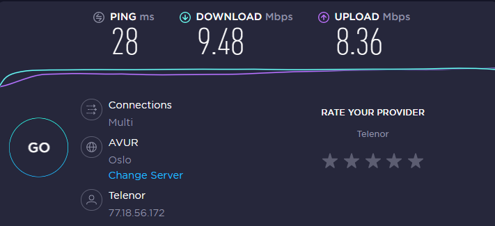

ZOOM: ny digital møte verktøy for Suldal Rotary klubb
laget /v Martijn Bellemakers: 11.april 2020
Last ned Zoom
Gå til https://zoom.us, helt nederst: Dowmload, Meetings Client, Download (last ned) Zoom Client for meetings.
Lag en konto (sign in).
Start app "Start Zoom"
logg på (sign up).
Her
kan du sjekke hvordan det går med Its Learning. Når dette ser bra ut kan du levere på Its Learning. Når Its Learning
svikter ennå, test din egne internetforbindelse med speedtest
og klikk på GO! Resultat blir samlet, se på bilde nedenfor (mmmhhh, ikke verst på hjemmekontor ;-))
